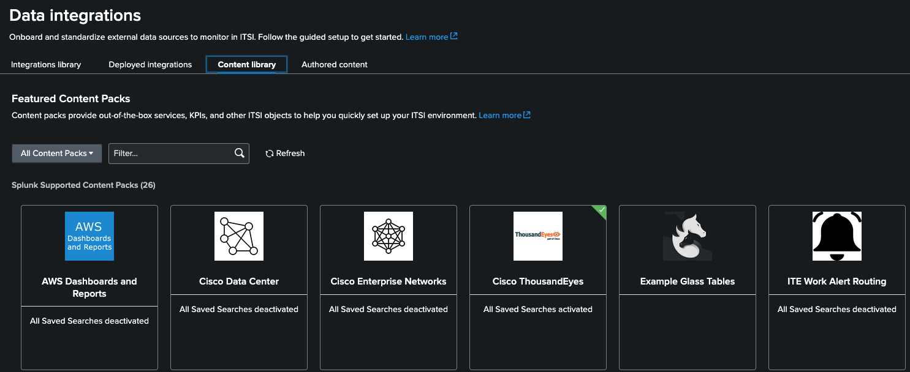
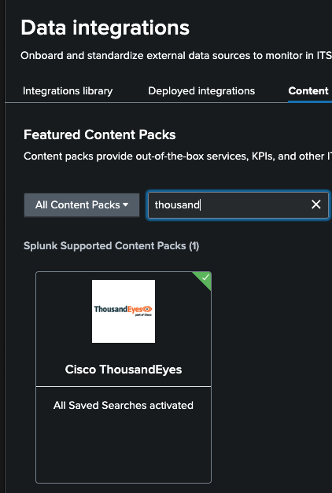
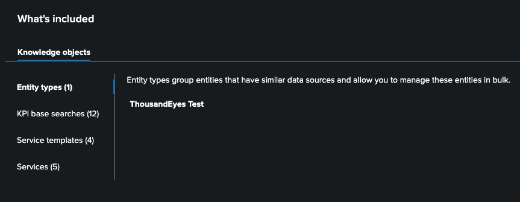
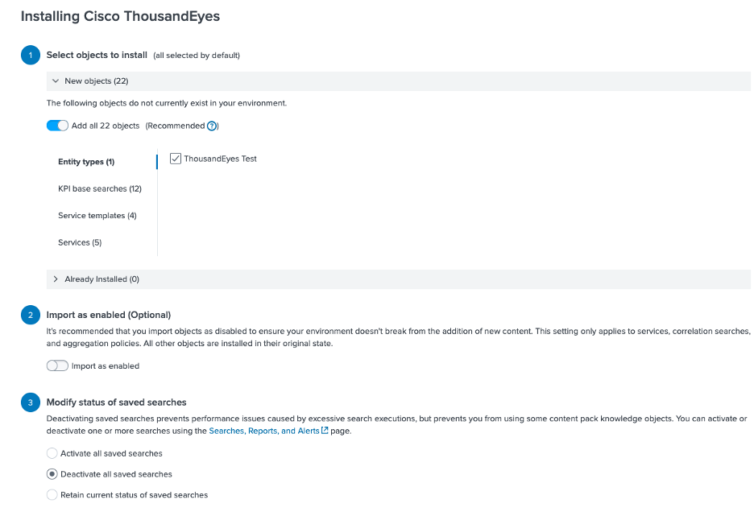
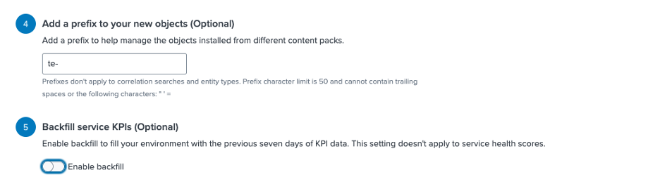
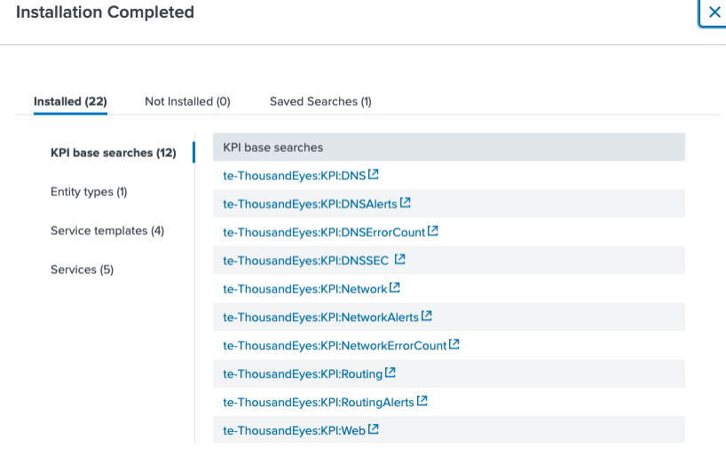
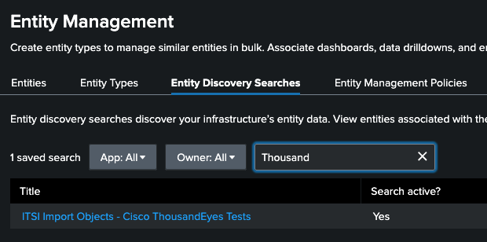

Cisco ThousandEyes — Content Pack Configuration
This page describes how to install and configure the Content Pack for Cisco ThousandEyes within ITSI. This content pack enables you to monitor and troubleshoot ThousandEyes network tests using ITSI services, KPIs, and entity discovery searches.
📚 Official documentation: About the Content Pack for Cisco ThousandEyes
What This Content Pack Provides
The Content Pack for Cisco ThousandEyes gives you:
- Services that represent ThousandEyes tests as ITSI services with KPIs and entities.
- Service templates with predefined service properties to create and manage multiple services. Changes to a template propagate to all linked services.
- KPI base searches that share search definitions across multiple KPIs to reduce load and improve performance.
ℹ️ This content pack requires the Cisco ThousandEyes App for Splunk to be installed and receiving data. The default expected data index is
thousandeyes.
Step 1 — Install the Content Pack
- In ITSI, go to Apps > IT Service Intelligence.
- Navigate to Configuration > Data Integrations.
- Click the Content Library tab to see all available content packs.

- Search for ThousandEyes in the search bar.

- Click on the ThousandEyes content pack and review the list of objects that will be installed.

- On the same screen, click Proceed to begin the installation.
⚠️ Best Practice: After installation, all saved searches are disabled by default. Do not enable everything at once. Follow the steps below to selectively enable only the searches required for your environment.
- We will install everything disabled. Make sure you leave yours the same as the example below


-
Click Install selected and then install (skip backups)
-
You should see this

Step 2 — Enable the Entity Discovery Search
Just as with AppDynamics, you need to enable the ThousandEyes entity discovery search so ITSI can automatically import ThousandEyes test entities.
- In the ITSI menu, go to Configuration > Entity Management.
- Click Entity Discovery Searches and search for Thousand.

- Follow the same steps used for AppDynamics to enable the search and adjust the execution schedule.
Step 3 — Adjust the Search Schedule
Reduce the search execution frequency for lab and testing purposes:
- Click the search name, then click Edit Search.
- Toggle Search active? to Yes.
- Click Edit Schedule and set the cron expression to run every 5–10 minutes (e.g.,
*/5 * * * *). - Click Save.
Step 4 — Update the Index Macro
If your ThousandEyes data stream uses an index other than thousandeyes, update the search macro:
- Go to Settings > Advanced Search > Search Macros.
- In the App dropdown, select Cisco ThousandEyes (
DA-ITSI-CP-thousandeyes). - Find and click
itsi_cp_thousandeyes_index. - In the Definition field, change
index="thousandeyes"tote_index - Click Save.
📚 See the full integration guide: Splunk ITSI Integration — ThousandEyes Documentation